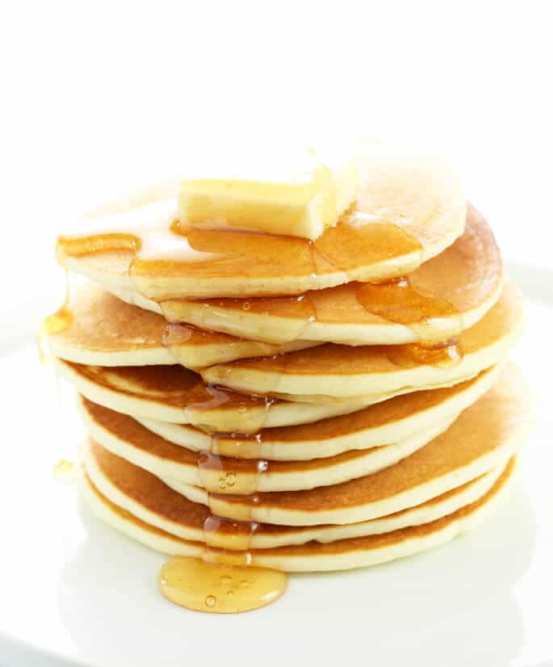

Pancakes

Description
Good old-fashioned pancakes from Grandma’s recipes book.
Perfect pankcakes are easier to make than you think. This
pancake recipe produce thick, fluffy, and all-round delicious pankcakes
with just a few ingredients that are probably already in your kitchen.
Ingredients
- 1 1/2 cups all-purpose flour
- 3 1/2 teaspoons baking powder
- 1 tablespoon white sugar
- 1/4 teaspoon salt
- 1 1/4 cups milk
- 3 tablespoons butter, melted
- 1 egg
Steps
- Mix the dry ingredients together (flour, backing powder, sugar, salt).
- Make a well, then add the wet ingredients (milk, melted butter, egg). Stir to combine.
- Heat a ligthly oiled pan over medium-high heat.
Pour the batter on the the pan using approximately 1/4 cup for each pancake;
cook until bubbles form and the edge are dry (2-3 minutes).
- Flip and cook until browned on the other side. Repeat with remaining batter.
Home